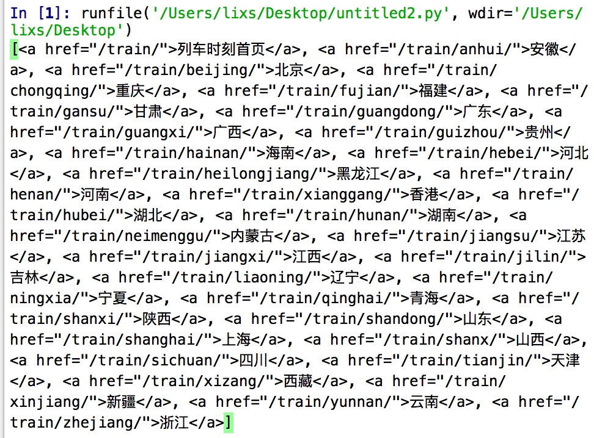

520送点啥呢。有Python不慌~哈哈
我们来试着找一辆5月20号13点14的列车吧~
从分析到实践
初探
百度了下列车时刻表，有个ip138，就爬它啦🤭。先读一下第一页的内容：
这网站太老了。竟然不是UTF-8编码的。
解码：
使用urlopen：html = urlopen(url).read().decode('GB2312')
使用Requests：r.encode('ISO-8859-1').decode('GB2312')
OK，可以愉快地玩耍啦。
循环读全部列车数据
先从第一页入口读到每个省的数据，根据a标签的href属性很容易发现他们都是/train开头的，正则搞定：province = soup.find_all('a',{"href":re.compile("/train/")})

然后一个循环开始爬这个省的城市，这里的a标签都是以省份的拼音开头的，就是我们上一步的标签i[‘href’]：city = soup.find_all('a',{"href":re.compile(i['href'])})
太多了不上图了。开始读每个城市的列车咯。
由于时刻表被存在了
这时候发现，并不是所有的13:14都是发车的时间，根据表格内容，第4是发车的时间。我们就把筛出来的数据，split后再判断一下是不是第六列内容是 13:14 ，如果是再append到answer列表：
if i.text.split()[3] == '13:14':
answer.append(i.text)`
至此所有的代码基本就完成了，可运行起来出了个问题，就是循环队列的网页太多，超时了整个循环都会停止，而且爬了一段时候后一直返回HTTP-Err。
请教下同学，写了个Try的函数：
防止HTTP超时
def fun(url):
result=''
try:
result = urlopen(url,timeout=10).read()
except:
result = fun(url)
print('error')
return result
这样，如果超时就会print一个error而且一直递归下去，循环也不会break了。爬网页必备啊~
代码
from bs4 import BeautifulSoup
from urllib.request import urlopen
import re
#import webbrowser
base_url = "http://qq.ip138.com"
city = ["train/"]
answer=[]
#his = his.encode('uft-8')
#url = base_url + his[-1]
html = urlopen("http://qq.ip138.com/train").read().decode('GB2312')
#print(html)
#webbrowser.open(url)
soup = BeautifulSoup(html,features='lxml')
#print(soup.find('a').get_text(),'\n后缀：',city[0])
#找到 属性href是/train/开头 的 a标签
province = soup.find_all('a',{"href":re.compile("/train/")})
def fun(url):
result=''
try:
result = urlopen(url,timeout=10).read()
except:
result = fun(url)
print('error')
return result
print(province)
for i in province[1:-1]:
print(i['href'])
url = base_url+i['href']
html = fun(url)
soup = BeautifulSoup(html,features='lxml')
#读每个省里的城市
city = soup.find_all('a',{"href":re.compile(i['href'])})
#flag这个省
flag = i['href']
for i in city[1:-1]:
#哈哈。终于读到时刻表了
print(i['href'])
url = base_url+i['href']
html = fun(url)
soup = BeautifulSoup(html,features='lxml')
train = soup.find_all('tr')
p=re.compile(r'13:14')
for i in train:
if p.search(str(i)):
if i.text.split()[3] == '13:14':
answer.append(i.text)
运行结果

收尾工作
原来有好多好多符合条件的列车呀，那么作为花(Qiong)朵（Ren）的我怎么选呢。
哈哈。当然是用到站时间-发车时间计算出最（Pianyi）的那一辆啦。
这里又学到了Python的time包。
给你们个模板拿去用：
import time
#经停时间是第六列
t1 = time.mktime(time.strptime(i.split()[6],'%H:%m')
#到站时间是最后一列
t2 = time.mktime(time.strptime(i.split()[-1],'%H:%m')
t2- t1
最后我买了这一班：

哈哈，明天抽个空去取票去~